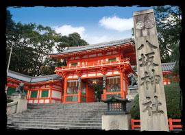
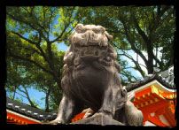
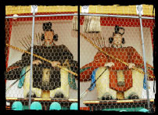

The Yasaka shrine is found between the Gion District and Higashiyama District. As we approach Yasaka shrine, we might see the Nishi-romon gate on the east side with two bronze lion statues. The two lion statues represent the guardians of the shrine, similar to the many other guardian statues of other shrines. The Nishi-romon gate is considered the symbol of the Higashiyama district but the main gate is the Minami-romon Gate to the south. Rather than two guardian Deva kings we see at most shrine entrances, the Nishi-romon gate has two wooden statues of Zuishin.
The shrine's main hall consists of the honden (inner sanctuary) and haiden (offering hall). The main hall is 15 meters tall and the roof is made of hinoki bark. There is a dance stage in front of the main hall with hundreds of lanterns that get lit in the evenings. Local businesses can donate and have their name written on a lantern. Legend says that there is a bottomless pond where a blue dragon resides under the main hall. The dragon draws energy from the water and acts as a guardian for Kyoto.


